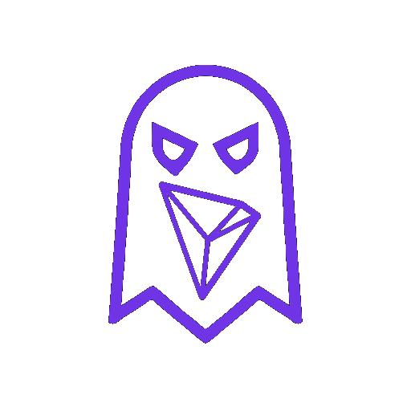
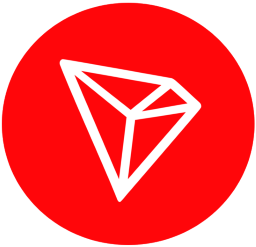

No mira solamente transferencias.
Interpreta lo que sucede detrás de ellas.
Herramienta propia en Python diseñada para observar, clasificar y analizar actividad TRC-20 del token BRST en la red TRON. Identifica contratos ejecutados, reconstruye el contexto de las operaciones e interpreta interacciones con protocolos como SunSwap V4. Los resultados se convierten en notificaciones enriquecidas y representaciones visuales generadas dinámicamente.
TxGhost es un sistema de monitoreo on-chain desarrollado de forma independiente. Consulta periódicamente los eventos TRC-20 de un contrato observado, reconstruye el contexto de cada transacción a partir de múltiples fuentes y clasifica la operación según el contrato ejecutado y las direcciones involucradas.
El objetivo no es solo notificar movimientos, sino interpretar qué ocurrió: si fue una compra o venta a través de un router, un aporte o retiro de liquidez, una quema, un swap genérico o una transferencia P2P. Cada evento se enriquece con datos on-chain (supply, precio, holders) y se presenta con una interfaz visual generada en tiempo de ejecución.
Seis módulos funcionales, cada uno resolviendo un problema concreto sobre datos on-chain.
Consulta periódica del contrato observado, con caché de transacciones procesadas para evitar duplicados entre ciclos de monitoreo.
Distingue compra, venta, aporte y retiro de liquidez, burn y swap genérico según el contrato ejecutado.
Detalle de bloque, fecha, estado, recursos (bandwidth/energy) y eventos paginados de cada hash.
Top 10 holders y posición individual en el ranking, con balance y porcentaje de participación.
Precios on-chain (RATE()) y de mercado (CoinGecko, Binance) con tarjetas visuales generadas con PIL.
Ocho redes, cuatro mecanismos de estimación distintos y fórmulas documentadas por red.
El núcleo del sistema es una cascada de tres etapas: captura, interpretación y clasificación. Cada etapa cumple una función específica en el procesamiento de los datos on-chain.
Tronscan entrega las transferencias del contrato observado. TxGhost mantiene
una caché de transacciones procesadas (TX_SEEN) para evitar
notificaciones duplicadas entre ciclos.
Se consulta el detalle de la transacción y se busca el contrato ejecutado mediante fallbacks en cascada:
trigger_info.contract_addresscontractData.contract_addressraw_data.contract[0].parametertoAddress (último recurso, menor confianza: destino reportado por la API, no necesariamente el contrato ejecutado)
Se contrasta el contrato ejecutado, las direcciones involucradas y la
heurística de método (es_swap) para identificar la operación.
La respuesta de transaction-info de Tronscan no es consistente:
toAddress puede venir vacío, el contrato puede aparecer en
contractData o en raw_data según la versión del
endpoint, y en algunos casos se devuelve en hexadecimal en lugar de Base58.
La cascada no es defensiva por gusto: es el resultado de trabajar contra
respuestas reales de la API.
| Condición | Tipo detectado |
|---|---|
to == SUN_POOL_MANAGER y router ejecutado | 🔄 VENTA / COMPRA BRST |
to == SUN_POOL_MANAGER sin router | 🌞 APORTE LIQUIDEZ |
from == SUN_POOL_MANAGER | 💰 RETIRO LIQUIDEZ |
from/to == SUN_POSITION_MANAGER | 🔄 SWAP / 🔥 BURN |
from == Q55_WALLET + destino y contrato ejecutado | 🤑 NUEVA COMPRA / 🔥 BURN (según condiciones adicionales) |
es_swap(txID) == true | SWAP genérico |
| Sin coincidencia | 🤝 TRANSFERENCIA P2P |
La clasificación se basa en origen, destino, contrato ejecutado y condiciones específicas de cada operación. El orden de evaluación de reglas evita falsos positivos cuando coinciden varias condiciones.
SunSwap V4 distribuye la lógica entre tres contratos con roles distintos. La clasificación depende de identificar cuál fue ejecutado y cuál es el destino de la transferencia.
| Contrato | Rol | Dirección |
|---|---|---|
| Universal Router | Punto de entrada de swaps | TSJEtPuqHpvSaVnSwvCsngaeBxrGUzp95Q |
| Pool Manager | Gestión de pools de liquidez | TVjuTE3V5bMVdpfNhid8kD2v35T2k1u1Br |
| Position Manager | Gestión de posiciones LP | TC8xQzPHfn5KceZV6s6GmZkBCFWWUoPXs1 |
(contrato ejecutado, from, to).
Una misma transferencia puede adquirir significados distintos según el contrato
ejecutado, el origen, el destino y el contexto de la operación.
Módulo independiente que estima el costo de una transferencia en ocho redes. Cada red usa un mecanismo distinto según lo que expone su infraestructura.
| Red | Mecanismo | Fuente |
|---|---|---|
| Ethereum | Gas price + precio del token | Blocknative + Binance |
| Arbitrum | Gas price + precio del token | Blocknative + Binance |
| Avalanche | Gas price + precio del token | Blocknative + Binance |
| Polygon | Gas price + precio del token | Blocknative + Binance |
| BNB Chain | Gas price + precio del token | Blocknative + Binance |
| TRON | Simulación triggerconstantcontract | TronGrid |
| Solana | Estimación por lamports | Binance (precio SOL) |
| BitTorrent Chain | eth_gasPrice por RPC | RPC BTTC + Binance |
transfer(address,uint256)) y un costo de referencia por red. El
consumo de referencia no contempla todas las variaciones posibles del estado del
contrato receptor ni condiciones particulares de ejecución. Los valores reales
dependen del estado de la red al momento de la ejecución. En TRON se habla de
costos de transacción (Energy y Bandwidth), no de gas.
Las notificaciones no son texto plano. Cada tipo de evento tiene una tarjeta visual generada en tiempo de ejecución con Pillow, y los comandos de consulta producen imágenes con datos on-chain actualizados.
Monto, equivalente en TRX, supply, precio on-chain y holders en un solo mensaje.
Posición, balance y porcentaje de participación con barra de progreso renderizada.
Precio, market cap, volumen 24h y ranking, con ícono del token.
Votos y posición en el ranking global de Super Representantes.
Acceso controlado por clave temporal. Los chats autorizados se persisten en
chat_ids.json.
Autoriza el chat. Clave de 10 caracteres, válida 5 minutos.
Genera clave temporal (solo por privado).
Ficha ASCII del proyecto y datos del autor.
Detalle completo: bloque, fecha, estado, recursos y eventos paginados.
Ranking del holder en BRST + imagen con posición, balance y % de participación.
Precios del ecosistema TRON y accesos rápidos.
Tarjeta de precio. /pr brst usa el RATE() on-chain.
Super Representante de Brutus: votos y posición.
Top 10 holders con balance formateado.
Navegación paginada de eventos (10 por página).
Costos de transacción en USDT en 8 redes.
Validación del cálculo EVM con transacción real y fórmulas por red.
Cierra el mensaje asociado al callback.
| Capa | Tecnología |
|---|---|
| Runtime | Python |
| Interfaz | pyTelegramBotAPI (TeleBot) |
| Imágenes | Pillow (PIL) |
| HTTP | requests |
| Blockchain (TRON) | Tronscan API, TronGrid, SunSwap V4 |
| Blockchain (EVM) | Blocknative, RPC BTTC |
| Mercado | Binance, CoinGecko, 3xpl |
Proyecto desarrollado de forma independiente. Sin infraestructura corporativa, sin protocolo propio. Un sistema independiente de interpretación de actividad on-chain, con monitoreo, clasificación, enriquecimiento de datos y una interfaz de consulta, construido sobre servicios existentes para resolver problemas concretos del ecosistema de Brutus.